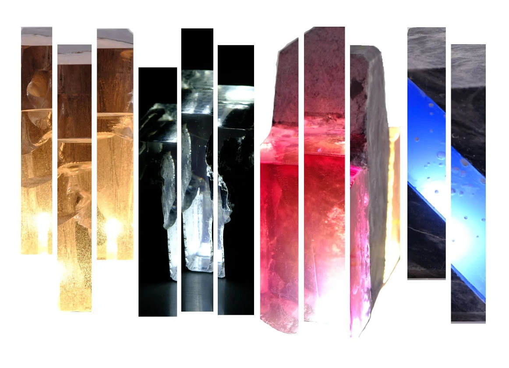
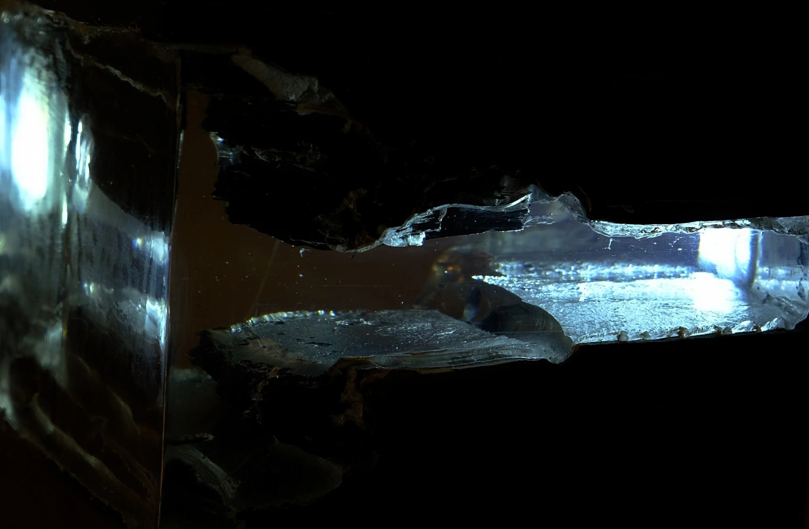
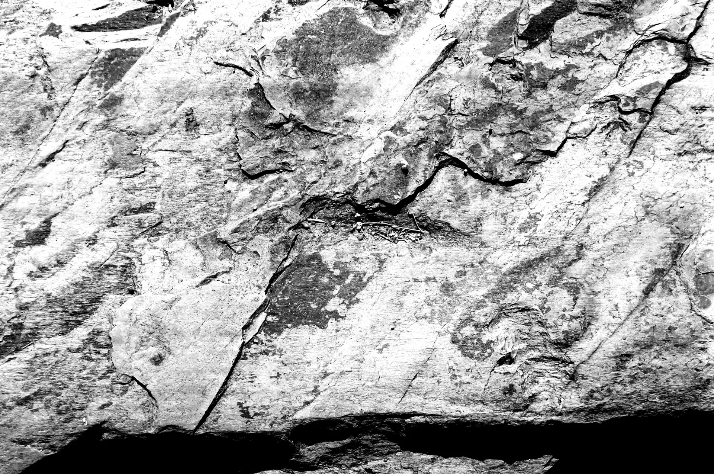
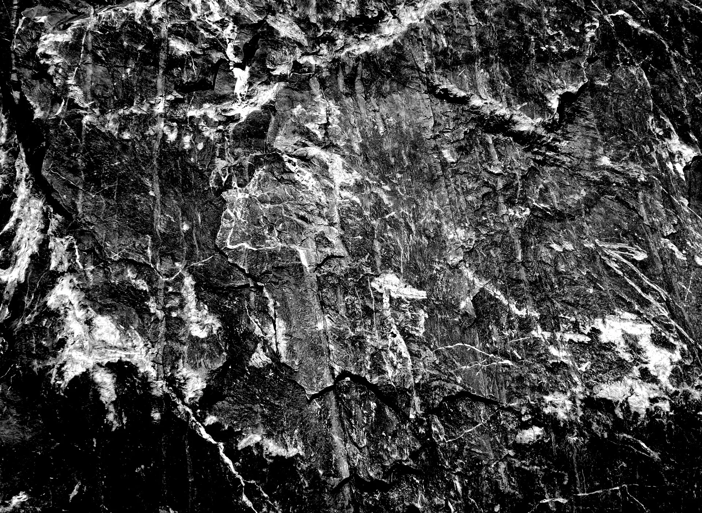

Lâmpadas de Pedra e Resina

A Exímia surge da necessidade de revelar, não só o património natural português, mas também o valor do Design na criação de novas utilizações deste material ancestral, a pedra portuguesa, cuja qualidade e valor perduram no tempo. Caminhamos para uma actividade de reaproveitamento que envolve uma abordagem criativa na produção de objectos a partir de materiais naturais excedentes e que resulta numa transformação com um carácter utilitário. Esta acção criativa possibilita a produção de uma classe de objectos com características próprias e envolve outras áreas do conhecimento. A utilização e o domínio dos materiais existentes e a sua possível reutilização em contextos distintos, permitiu-nos, ainda, a evolução da nossa própria visão, enquanto designers, pois transporta-nos para a realidade da riqueza do património natural português e do seu aproveitamento numa perspectiva ecológica e estética.

A colecção Mutatis é uma chamada de atenção para os desperdícios fabris das pedreiras portuguesas. A colecção partiu da observação das pedras no seu estado puro (blocos de pequenas dimensões), e da avaliação do aspecto da textura e forma. O conceito nasce de tirar partido das formas naturais das pedras, provocando-lhes deformações de forma aleatória, para serem usadas na construção das luminárias. Observamos com sentido artístico, seleccionamos com intenção de replicação e complementamos com epoxy, abrindo o caminho para a função, a reprodução e a utilização.

Somos uma equipa que busca recuar a tendência do "quanto mais melhor". É um desafio à sabedoria da evolução do projecto, pois se alerta para uma maior preocupação com as questões ambientais, fazendo com que essa seja a base mais profunda e poderosa que deve dar forma ao projecto em design. É necessário uma diversificação na abordagem projectual, ou seja a descoberta imaginativa de novas aplicações para componentes supérfluos, bem como o aproveitamento dos desperdícios e resíduos fabris ainda não suficientemente explorados. A escolha dos materiais é crucial no desenvolvimento de um projecto. O ciclo de vida de um produto está no mesmo patamar que as necessidades básicas de cada ser humano. O eco-design colabora na preservação do ambiente e da vida humana. Caso não sejam consideradas acções sustentáveis as necessidades básicas são comprometidas.
Actualmente focados na criação de luminárias, a área de Design de Produto é a nossa base de trabalho. Criamos e desenvolvemos qualquer tipo de trabalho nesta área.
